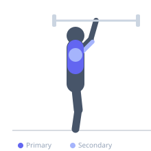

Exercise guide / Larsen Press
Larsen Press
The Larsen Press is a bench press variation performed with the legs extended straight or the feet elevated off the floor, eliminating leg drive from the movement. This strict technique removes the lower body contribution and places the entire pressing demand on the pectorals, anterior deltoids, and triceps, while also increasing core stabilization requirements.
Primary muscles
pectoralis major sternal
pectoralis major clavicular
Secondary muscles
deltoid anterior
triceps long head
triceps lateral head
Stabilizers
transverse abdominis
rectus abdominis
pectoralis minor
Equipment
Standard Barbell
Flat Bench
Optional
Power Rack (Squat Cage)


Starting position
- Lie on a flat bench under a racked barbell. Grip slightly wider than shoulder-width. Extend the legs straight with heels on the bench edge or raise the feet entirely.
Setup
- Set the bench in a power rack. Remove leg drive from the equation by straightening the legs before unracking the bar. Keep the lower back in contact with the bench pad.
Steps
- Step 1: Unrack the bar and hold it above the chest with arms extended.
- Step 2: Lower the bar under control to touch the lower chest, with legs remaining straight throughout.
- Step 3: Press the bar back to the starting position through the chest and triceps.
- Step 4: Maintain tension in the core throughout to stabilize the torso without leg assistance.
Coaching cues
- Keep legs long and completely relaxed
- Squeeze the bench with your upper back as you press
- Breathe into the belly to brace the core without leg assistance
Breathing
- Inhale and brace the core before lowering. Exhale at the top of the press.
Range of motion
- Full touch to the chest at the bottom; full elbow lockout at the top.
Tempo
- 3-1-1-0
Common mistakes
- Planting the feet mid-set to gain leg drive
- Allowing the lower back to arch excessively off the bench
- Using the same load as a standard bench press — reduce weight to account for absent leg drive
Safety
- Reduce load by 10-20% compared to your regular bench press
- Use safety bars in a power rack as the reduced stability makes failing more likely
Training
- strength: 3–6 reps
- hypertrophy: 6–12 reps
- strength: 3–5 sets
- hypertrophy: 3–4 sets
- Rest: {'strength': 180, 'hypertrophy': 90}